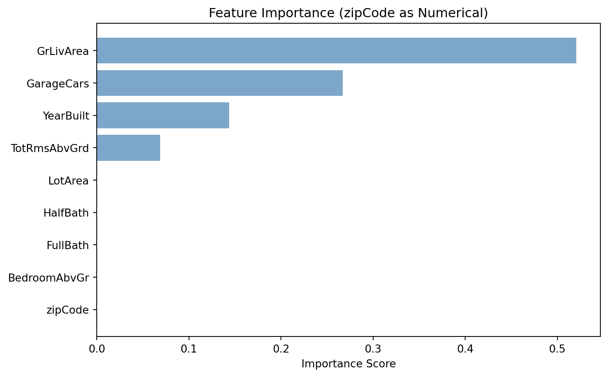

Model built with 8 terminal nodesDecision Tree Challenge
Feature Importance and Categorical Variable Encoding
Decision Tree Challenge - Feature Importance and Variable Encoding
Data Loading and Model Building
Tree Visualization: zipCode Treated as Numerical

Feature Importance: zipCode Treated as Numerical
| Feature | Importance | Importance_Percent | |
|---|---|---|---|
| 2 | GrLivArea | 0.520719 | 52.07 |
| 7 | GarageCars | 0.266960 | 26.70 |
| 1 | YearBuilt | 0.143594 | 14.36 |
| 6 | TotRmsAbvGrd | 0.068727 | 6.87 |
| 0 | LotArea | 0.000000 | 0.00 |
| 4 | HalfBath | 0.000000 | 0.00 |
| 3 | FullBath | 0.000000 | 0.00 |
| 5 | BedroomAbvGr | 0.000000 | 0.00 |
| 8 | zipCode | 0.000000 | 0.00 |

Proper Categorical Encoding: One-Hot Encoding in Python
| Feature | Importance | Importance_Percent | |
|---|---|---|---|
| 2 | GrLivArea | 0.520719 | 52.07 |
| 7 | GarageCars | 0.266960 | 26.70 |
| 1 | YearBuilt | 0.143594 | 14.36 |
| 6 | TotRmsAbvGrd | 0.068727 | 6.87 |
| 0 | LotArea | 0.000000 | 0.00 |
| 4 | HalfBath | 0.000000 | 0.00 |
| 3 | FullBath | 0.000000 | 0.00 |
| 5 | BedroomAbvGr | 0.000000 | 0.00 |
| 8 | zipCode_50010 | 0.000000 | 0.00 |
| 9 | zipCode_50011 | 0.000000 | 0.00 |
| 10 | zipCode_50012 | 0.000000 | 0.00 |
| 11 | zipCode_50013 | 0.000000 | 0.00 |
| 12 | zipCode_50014 | 0.000000 | 0.00 |
| 13 | zipCode_50015 | 0.000000 | 0.00 |
| 14 | zipCode_50016 | 0.000000 | 0.00 |
| 15 | zipCode_50017 | 0.000000 | 0.00 |
| 16 | zipCode_50018 | 0.000000 | 0.00 |
| 17 | zipCode_50019 | 0.000000 | 0.00 |
| 18 | zipCode_50020 | 0.000000 | 0.00 |
| 19 | zipCode_50021 | 0.000000 | 0.00 |
| 20 | zipCode_50022 | 0.000000 | 0.00 |
| 21 | zipCode_50023 | 0.000000 | 0.00 |
| 22 | zipCode_50024 | 0.000000 | 0.00 |
| 23 | zipCode_50025 | 0.000000 | 0.00 |
| 24 | zipCode_50026 | 0.000000 | 0.00 |
| 25 | zipCode_50027 | 0.000000 | 0.00 |
| 26 | zipCode_50028 | 0.000000 | 0.00 |
| 27 | zipCode_50029 | 0.000000 | 0.00 |
| 28 | zipCode_50030 | 0.000000 | 0.00 |
| 29 | zipCode_50031 | 0.000000 | 0.00 |
| 30 | zipCode_50032 | 0.000000 | 0.00 |
| 31 | zipCode_50033 | 0.000000 | 0.00 |
| 32 | zipCode_50034 | 0.000000 | 0.00 |
Tree Visualization: zipCode One-Hot Encoded

Feature Importance: zipCode One-Hot Encoded

Discussion Questions
1. Numerical vs Categorical Encoding
Zip code should be modeled categorically, not numerically. In real estate, a zip code represents a neighborhood label rather than a quantity with meaningful distance between values. A home in zip code 50013 is not automatically “more” of something than a home in 50012 in the way that a larger square footage or newer construction year would be. Because of that, zip code is a non-ordinal categorical variable.
Treating zip code as numerical encourages the tree to search for splits such as “zipCode < 50012.5.” That split is mathematically valid but conceptually weak because the numbering of zip codes does not create a natural ranking of neighborhood quality or home value. The result is that the model can understate the importance of location or assign importance based on arbitrary numeric thresholds.
When zip code is encoded categorically, the model is at least allowed to distinguish neighborhoods as separate groups. That approach fits the real-world meaning of the variable much better. In practical terms, if the goal is interpretability, modeling zip code numerically tells the cleaner-looking story, but modeling it categorically tells the more honest one.
2. R vs Python Implementation Differences
R does a better job here because its tree workflow is more naturally aligned with categorical data. In R, factors are built into the language and are the standard way to represent categorical variables. The rpart vignette explicitly notes that a factor is treated categorically by default. In contrast, Python’s standard DecisionTreeRegressor in scikit-learn still assumes numeric matrix input and does not natively treat ordinary categorical columns the same way. That design choice is why Python users often fall back on one-hot encoding, which changes the structure of the tree and spreads the importance of one conceptual variable across several dummy columns.
The key weakness in scikit-learn is stated directly in the official documentation: “the scikit-learn implementation does not support categorical variables for now.” That is the clearest reason the Python tree looks different. A second scikit-learn explanation is also important: “Most of scikit-learn assumes data is in NumPy arrays or SciPy sparse matrices of a single numeric dtype.” Those two lines explain why plain DecisionTreeRegressor is awkward for zip code as a truly categorical predictor.
By contrast, R’s general data model is more categorical-friendly. The R documentation describes factors as a compact way to handle categorical data, and the rpart vignette notes that when a variable is a factor it is treated categorically by default. That means R is closer to the analyst’s intent from the beginning, while Python often requires preprocessing that changes both the tree and the interpretation.
If the question is which language models zip code better in this specific setting, I would choose R. Python can still be used successfully, but only after extra encoding steps that dilute interpretability. For this challenge, the difference is not just coding style. It affects the actual meaning of the resulting feature importance scores.
Documentation references used in this analysis
- scikit-learn Decision Trees: https://scikit-learn.org/stable/modules/tree.html
- scikit-learn FAQ: https://scikit-learn.org/stable/faq.html
- R introduction (factors): https://cran.r-project.org/doc/manuals/r-patched/R-intro.html
- rpart vignette: https://cran.r-project.org/web/packages/rpart/vignettes/longintro.pdf
3. Suggestions for Implementing Decision Trees in Python With Proper Categorical Handling
If the goal is better categorical handling in Python without relying on one-hot encoding, the strongest suggestions I found are CatBoost and LightGBM.
My first recommendation is CatBoost. Its documentation is very explicit: “Do not use one-hot encoding during preprocessing.” That is a strong statement because it shows CatBoost was designed to work with categorical features directly rather than forcing them into dummy columns first. For a variable like zip code, that is attractive because it keeps the modeling process closer to the true meaning of the variable.
A second strong option is LightGBM. Its documentation says: “LightGBM offers good accuracy with integer-encoded categorical features” and adds that this “often performs better than one-hot encoding.” That makes LightGBM especially appealing when categorical variables have many levels and one-hot encoding becomes messy or inefficient.
There is also a partial scikit-learn answer, although not for DecisionTreeRegressor itself. scikit-learn’s histogram gradient boosting documentation says that native categorical support is often better than one-hot encoding and also better than treating categories as ordered quantities. That means if someone wants to stay within scikit-learn, a more modern tree-based method such as HistGradientBoostingRegressor may be a better choice than a plain decision tree for mixed numeric and categorical data.
My overall recommendation would be:
- Use R with factors when interpretability of a simple tree is the main goal.
- Use CatBoost when you want strong native categorical handling in Python.
- Use LightGBM when you want efficient tree-based modeling with categorical support.
- Use plain scikit-learn
DecisionTreeRegressoronly with caution, because one-hot encoding can distort how one conceptual variable appears in the tree and in feature importance.
Sources for this section
- CatBoost categorical features documentation: https://catboost.ai/docs/en/features/categorical-features
- LightGBM advanced topics: https://lightgbm.readthedocs.io/en/latest/Advanced-Topics.html
- scikit-learn ensemble documentation: https://scikit-learn.org/stable/modules/ensemble.html
Final Conclusion
This challenge shows that feature importance is only as trustworthy as the way variables are represented. When zip code is treated as a number, the tree can create splits that look precise but do not make practical sense. When zip code is treated categorically, the analysis becomes more faithful to the real-world meaning of neighborhood. The broader lesson is simple: interpretability is not only about reading a tree. It is also about making sure the model was allowed to represent the data correctly in the first place.